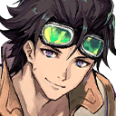

|
 |

Adaleigh |
Reactor, check! Fuel, check! It'll be a little rocky, so be sure to hold on to something! |

Minario |
Really? You just got here! Aren't you a busy one? |
Adaleigh |
You didn't have to come with us, you know? |
Minario |
I mean, I'd rather not get involved, but you've never entered the mines, have you? |
Adaleigh |
Well... |
Minario |
To find the inspection team, you'll have to make your way to the underground. |
Minario |
You're headed into a mine that's like a labyrinth. |
Minario |
People with no sense of the land here are bound to get lost. |
Adaleigh |
I guess you're right... |
Minario |
That means you'll need someone like me to guide you. |

Nimul |
You're familiar with the mines? |
Minario |
Of course. The mines on the surface below this city are under my father's control. |
Nimul |
Right. You're the son of the mayor of Redington. |
Minario |
That might not be good for much, but at least my knowledge of the mining tunnels can help you now. |
Minario |
But listen, our first priority must be to rescue the villagers. |
Minario |
Land the airship at these coordinates. It's the fastest way to get there. |
Adaleigh |
Roger that! |
 |

Waginau |
This place is nothing like the floating city. I can hardly believe it's part of the same region. |

Yna Ku |
The buildings over there are quite simple, aren't they? It looks like they've been rebuilt a number of times. |
Minario |
You're exactly right. And any time now... |
Nimul |
Ah! That was an earthquake just now? |
Minario |
This land is the lair of the Cursed Beast. Whenever it turns in its slumber, the shaking begins. |
Minario |
The earthquakes get much worse than this. |
Minario |
When Belphegor is in a bad mood, villages around here are decimated instantly. |

Emmel |
That's how much of a threat this region's Cursed Beast is... |
Adaleigh |
Yeah... This is why I've gotta help save everyone from this suffering! |
Nimul |
Adaleigh, focus on the task at hand. What did we come here to do? |
Adaleigh |
To stop the Fallen that appeared in the mines, and to save Icona. |
Nimul |
To do that, you must stay focused on your mission. |
Adaleigh |
Yeah... You're right. |
Minario |
Well, would you look at that. |
Adaleigh |
W-what? |
Minario |
Nothing. Just thinking how you've mellowed out lately. |
Minario |
Kinda gives me a jolt to see it. I might even say it's almost inspiring. Hello, there! How's it going? |
| Miner |
Oh, it's Mister Minario! What brings you here today? |
Yna Ku |
It's too quiet here. Something is off. If the Fallen were just here, there should be more alarm. |
Adaleigh |
You're right. That voice on the transmission was panicking, but... |
Minario |
I don't want to worry the people here for no reason. Leave this to me. |
Minario |
Hey, we're looking for someone. Anyone seen a lady engineer with a mechanical arm around here? |
| Miner |
I haven't, but I'll ask around. |
Minario |
Please do! I really appreciate that. |
| Miner |
Not a problem at all! Anything for you! |

Mira |
Oh, wow. You're respected around here, aren't ya? |
Minario |
Well, I've picked up some respect while doing my job as a Detective. |

Nyx |
You know, the people here are different from the people in the floating city. |
Minario |
Ah, well. This is a ruthless land. In conditions like these, the only way to live is to support one another. |
Minario |
They have to be different from the people above, who worry only about themselves. |
Minario |
I'd like to do what I can to make life easier for the people here... |
Minario |
For now, the least I can do is listen to what the people have to say and act as a voice for them. |
Adaleigh |
... |
Minario |
Well, there's no use in worrying about those things now. |
Minario |
First, we've gotta gather information and figure out where the inspection team— |
| Villager |
Aaaaaaaaahhh! |
Nimul |
What was that?! |
Minario |
Hey! What's going on?! |
| Villager |
F-F-Fallen! They came welling up out of the ground with that earthquake! |
Nimul |
Waginau! |
Waginau |
Right! |
Minario |
Dammit, we've been caught off guard! The villagers need to get to safety! |
| Villager |
That's no problem, but what about you, Mister Minario? |
Minario |
That's obvious! It's times like these that the people from "above" are supposed to do their jobs! |
Nimul |
Spiritbonding can handle the Fallen! Let's purify them before they harm the villagers! |